smartphone
objektbiografie

Rückbauten

 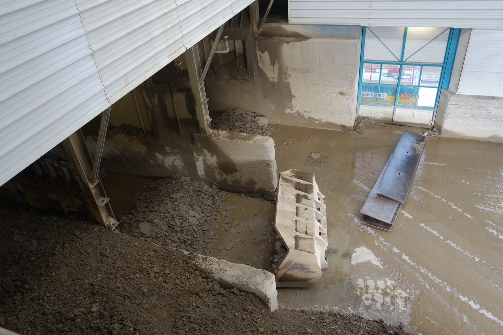
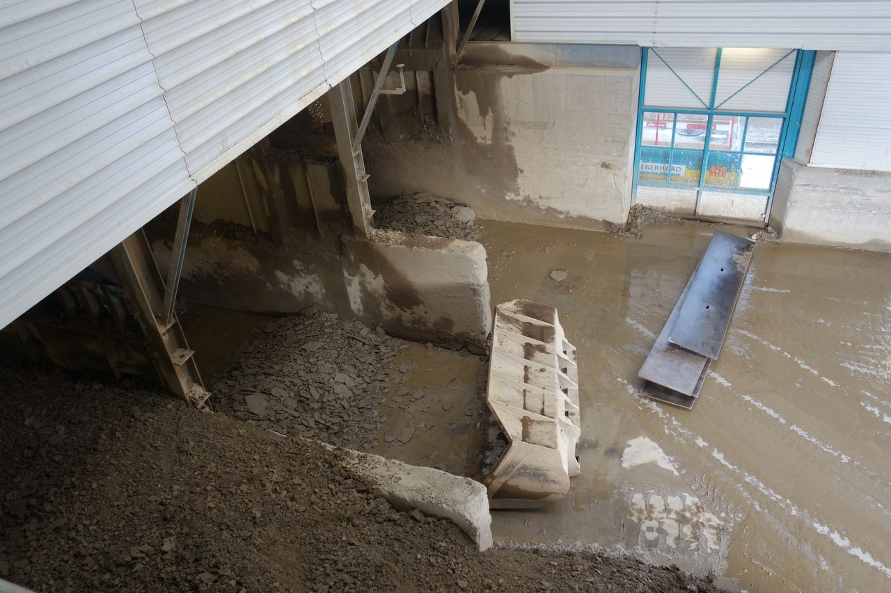

 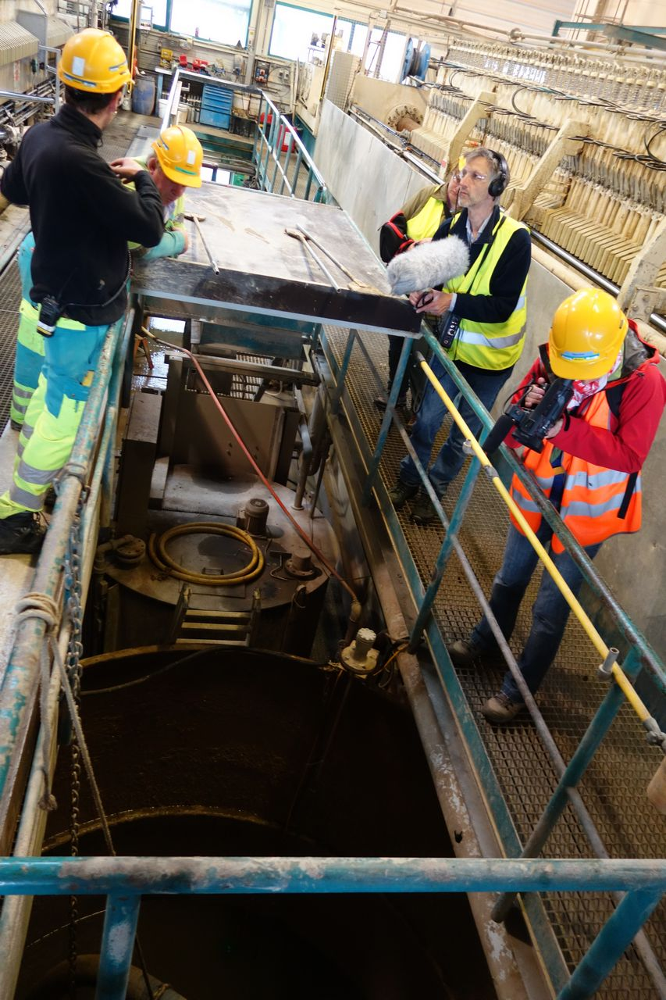
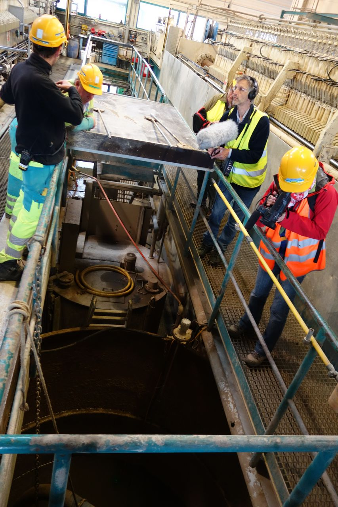


 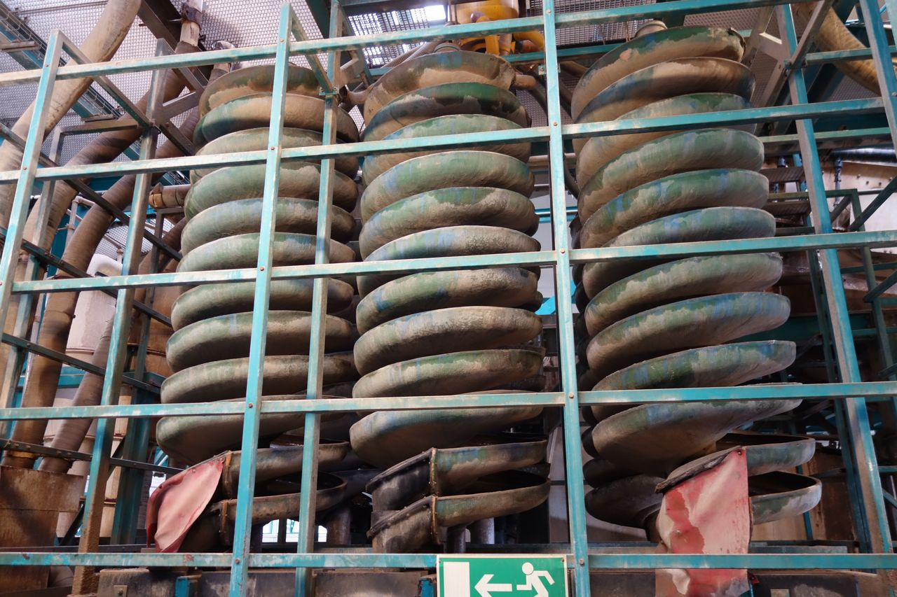
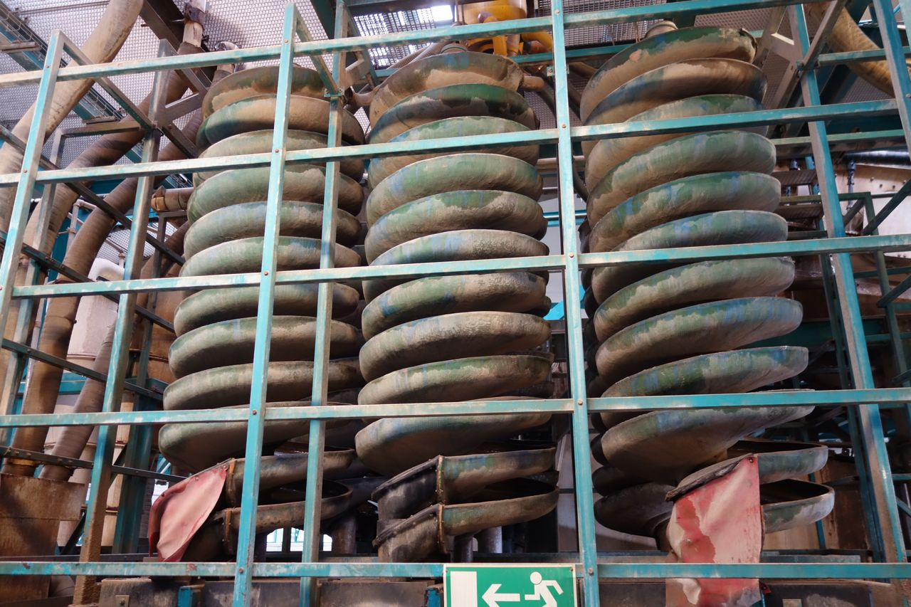
 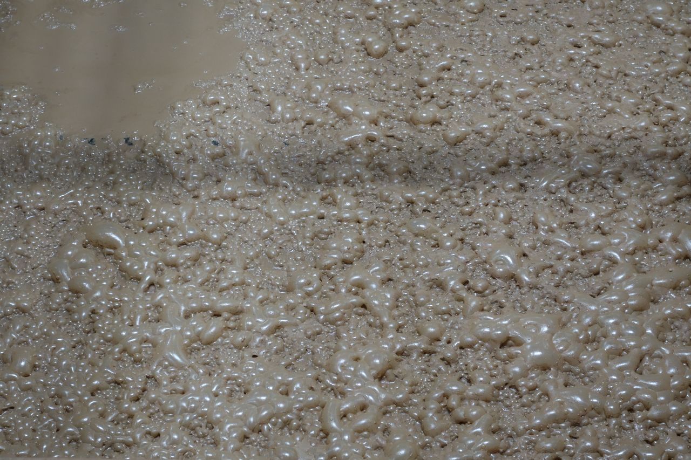
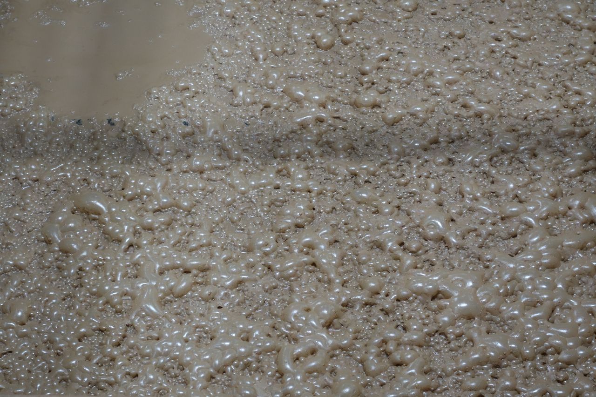


 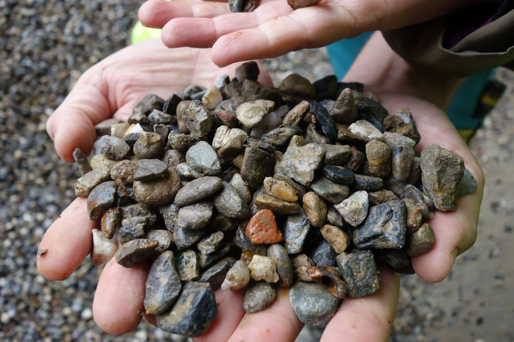
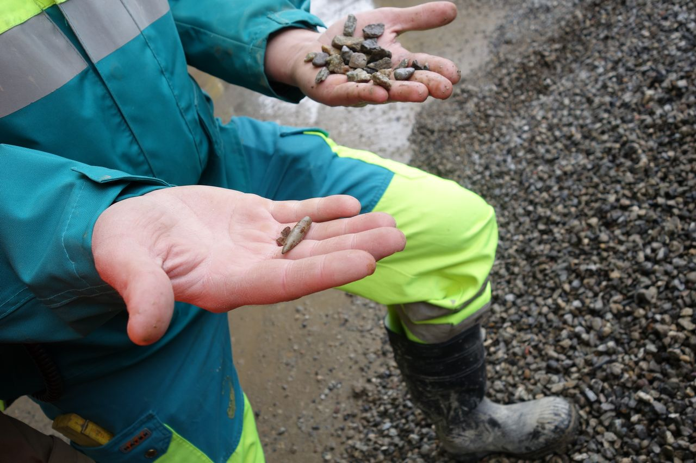
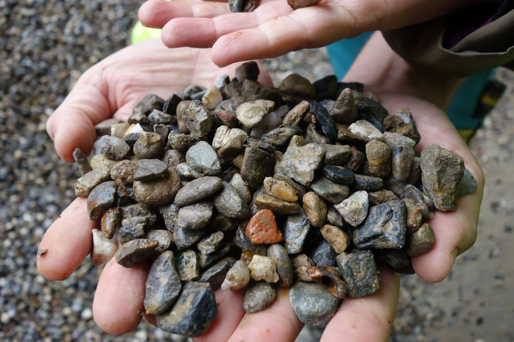
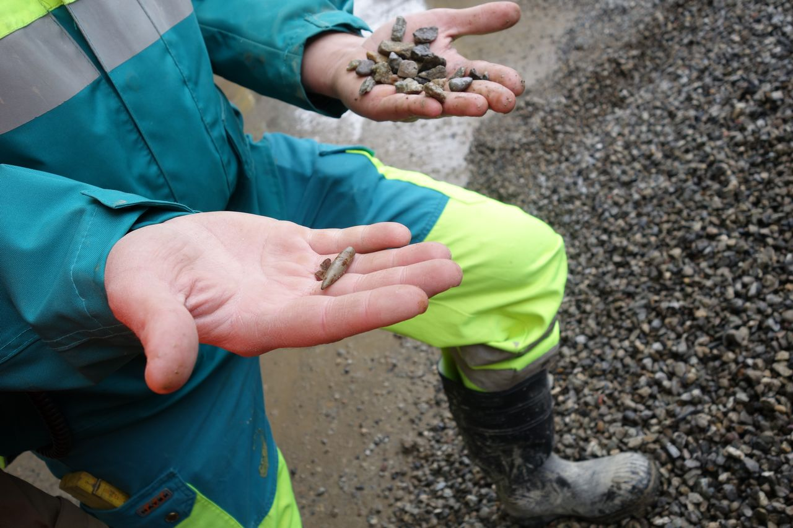


Bodenwaschanlage Eberhard AG Rümlang, Schweiz: Reinigung von Bauschutt und von kontaminierten Böden.
Der Weg der Kiesel
In der letzten Eiszeit, vor etwa 20'000 Jahren, bildete sich in den Alpen massenweise Kies. Die Bodenerosion auf den weitgehend vegetationslosen Böden war stark und zahlreiche Gesteinsstücke rutschten die Hänge hinunter in die Bäche. Viele kleine Steine lagen im Bachbett und wurden durch schnell fliessendes Wasser in jahrelanger Kleinarbeit zu kleinen Kieseln abgerundet. Verfolgt wird hier der Weg von zwei Kieseln durch verschiedene Um- und Zwischennutzungen im Schweizer Kontext.
Die Kiesel wurden zunächst durch gigantische Hochwasser bis in die Aare mitgerissen. Dort lagen sie für ein paar Jahrzehnte. Beim nächsten Riesenhochwasser wurde der eine Kiesel bis ans Rheinknie geschwemmt, wo er zusammen mit Milliarden anderer Kiesel auf einer Kiesbank im breit fliessenden Rhein abgelagert wurde.
Dort lag der eine Kiesel bis zum Bau des Hafen- und Umschlagplatzes am Klybeckquai 1924/25. Dann wurde er mit einem Bagger während der Hafenbauarbeiten auf die damalige Klybeckinsel transportiert: Die Insel wurde aufgeschüttet und der Rheinarm zwischen Insel und Festland zugeschüttet. Jetzt konnte man Öltanks und die Gleise der Hafenbahn auf der früheren Insel bauen.
Der andere Kiesel lagerte sich auch im Rhein ab, wurde jedoch wegen seines schwereren Gewichts nur bis zu einer Kiesbank südlich von Grenzach-Whylen getragen. Er wurde Bestandteil einer grossen Schotterterrasse am Rhein. Diese Schotterterrasse war im 20. Jahrhundert ein idealer Kiesgruben-Standort: Die Holcim AG, grösster Betonhersteller der Schweiz, baute dort Milliarden an Kieseln ab, verlud sie per Förderband auf ein Rheinschiff und brachte sie zum nächsten Betonwerk. Die Kiesel wurden in Beton eingegossen und der Beton zum Bau eines Öltanks der Migrol auf der Klybeckinsel verwendet. Die Wege der beiden Kiesel, die in den Alpen aus einem Gesteinsbrocken entstanden waren, verliefen also getrennt, bevor beide auf der Klybeckinsel verbaut wurden.
Durch die geplante Zwischennutzung der Klybeckinsel musste eine Lösung für den Rückbau der nicht mehr verwendeten Öltanks und den ölverseuchten Kiesboden gefunden werden. Der Platz in den Deponien wird immer knapper und Deponieraum ist teuer. Zudem steckt wertvolles Baumaterial für die nächsten Generationen in den Materialien. Denn Kiesel sind massive kleine Steine und daher innendrin vollständig sauber.
Basel-Stadt liess den alten Beton in einem Betonbrecher zerkleinern und zu neuem Beton verarbeiten. Der ölverseuchte Boden wurde in die Bodenwaschanlage in Rümlang/ZH transportiert, wo das Öl von den Kieseln gewaschen wurde. Die Kiesel gelangten danach in das nahe gelegene Betonwerk, wo sie für den Bau von neuen Gebäuden verwendet werden.
Soundscape zur Bodenwaschanlage ESAR der Eberhard AG Rümlang, Schweiz
Bodenwaschanlage Rümlang
Boden kann man waschen, ohne dass er zu Schlamm wird (abgesehen vom Feinanteil). Die verschmutzten Böden, die in der Bodenwaschanlage der der Eberhard AG in Rümlang gereinigt werden, stammen häufig aus Industriebrachen im Mittelland. Hier gibt es viele Böden mit kiesigem Untergrund – Industriequartiere stehen bevorzugt in den Ebenen, wo sich viel eiszeitlicher Schotter abgelagert hat.
Durch mehrmaliges Waschen und Spülen, durch Siebe und Sandabscheider, wird der Boden in die verschiedenen Korngrössen-Anteile zerlegt: Grosser Kies, mittlerer Kies, feiner Kies, verschiedene Sandfraktionen. Es ist ein riesiges Labyrinth an Förderbändern, Absetzbecken, Mulden und Wasser-Rohren, das ständig weiter entwickelt wird. Schliesslich wird lediglich der Feinanteil der kontaminierten Böden deponiert oder auch verbrannt. Alle gröberen Bestandteile gelangen ins Betonwerk nebenan und werden zu Beton und anderen Baustoffen weiterverarbeitet.
Seit einigen Jahren werden nicht nur öl- und sonstige schadstoffhaltige Böden in Rümlang gewaschen, sondern auch auf Bodenmaterial aus den zahlreichen schweizerischen Schiessständen. Dabei wird aus den Böden neben dem Kiesanteil auch die bleihaltige Munition extrahiert.
Quelle: Gespräche mit Thomas Peyer, Eberhard AG Rümlang (8.3.2017/26.7.2017).
Reinigungsprozesse von kontaminierten Materialien aus Rückbauten in der Bodenwaschanlage der Eberhard AG Rümlang, Schweiz